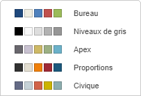

Modifier le jeu de couleurs
Les jeux de couleurs sont appliqués à la présentation entière. L'éditeur de présentations permet de modifier rapidement l'aspect de votre présentation et de définir la palette de Couleurs de thème pour des différents éléments de la présentation (objets, tableaux, formes automatiques, graphiques). Si vous appliquez les Couleurs de thème aux différents éléments de la présentation et ensuite sélectionnez un autre Jeu de couleurs, toutes les couleurs que vous avez appliqué auparavant changeraient en conséquence.
Pour modifier le jeu de couleurs, cliquez sur la flèche vers le bas située à côté de l'icône Couleurs sous l'onglet Conception de la barre d'outils supérieure et sélectionnez le jeu de couleurs approprié de la liste: Aspect, Bleu vert, Bleu II, Bleu chaud, Bleu, Échelle de gris, Vert jaune, Vert, Capitaux, Médian, Office 2007-2010, Office 2013-2022, Bureau, Orange rouge, Orange, Papier, Rouge orange, Rouge violet, Rouge, Flux d'air, Violet II, Violet, Jaune orange, Jaune et New Office. Le jeu de couleurs sélectionné sera surligné dans la liste.

Une fois le jeu de couleurs sélectionné, il est possible se sélectionner d'autres couleurs de palettes qui sont disponibles pour l'élément nécessaire du document. Pour la plupart des éléments de la présentation, on peut accéder à la la fenêtre de palettes de couleurs en cliquant sur la case colorée dans la barre latérale droite lorsque l'élément nécessaire est sélectionné. Quand à la police, il faut cliquer sur la flèche vers le bas à côté de l'icône Couleur de police sous l'onglet Accueil de la barre d'outils supérieure. Les palettes disponibles sont les suivants:

- Couleurs de thème - les couleurs qui correspondent à la palette de couleurs sélectionnée dans la présentation.
- Couleurs standard - le jeu de couleurs par défaut. Le jeu de couleurs sélectionnée ne les affecte pas.
- Il y a deux façons d'appliquer une couleur personnalisée:
- Pipette - sert à sélectionner la couleur nécessaire en cliquant sur celle-ci dans la présentation.
- Plus de couleurs sert à rechercher la couleur manquante dans la palette. Sélectionnez la gamme de couleurs nécessaire en déplaçant le curseur vertical et définissez la couleur spécifique en faisant glisser le sélecteur de couleur dans le grand champ de couleur carré. Une fois que vous sélectionnez une couleur avec le sélecteur de couleur, les valeurs de couleur appropriées RGB et sRGB seront affichées dans les champs à droite. Vous pouvez également spécifier une couleur sur la base du modèle de couleur RGB en entrant les valeurs numériques nécessaires dans les champs R, G, B (rouge, vert, bleu) ou saisir le code hexadécimal dans le champ sRGB marqué par le signe #. La couleur sélectionnée s'affiche dans l'aperçu Nouveau. Si l'objet a déjà été rempli d'une couleur personnalisée, cette couleur sera affichée dans la case Actuel que vous puissiez comparer les couleurs originales et modifiées. Lorsque la couleur est spécifiée, cliquez sur le bouton Ajouter:

La couleur personnalisée sera appliquée à l'élément sélectionné et sera ajoutée dans la palette Couleurs récentes.